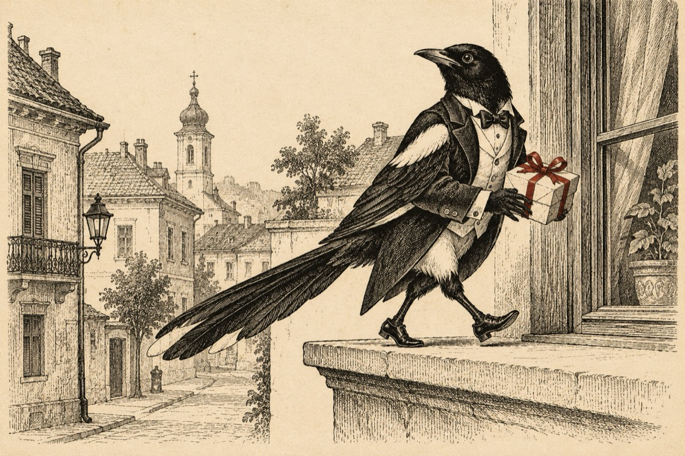

Coțofana încrezută
S-a dus o coțofană la oraș
Cu frac călcat precis pe dungă,
Banană-n guleraș
Și pantalon pe gheată să-i ajungă.
Motivul plecării de la sat?
Ori c-o strângeau pantofii săi de lac
Sau că vazduhul era afumat,
Și că prostimea nu-i făcea pe plac!
Prea multă neghiobime strânsă la grămadă,
Cu maniere nedemne pentru ea,
Și c-o huleau toți din ogradă
De ce anume, habar n-avea!...
Unii strigau că fură ouă
Alții că-nhață de sub cloșcă puii,
Și că împarte hrana pe din două
Cu vulpea, șmechera pădurii!
Acuma pusă la trei ace
Pe străzi, pe bulevard, sau pe balcoane,
Pe orășeni, vrea dară să îi joace,
Finuț, nu-n maniere grosolane!
Ba șterpelind un pachețel,
Pus pe pervaz pentru răcoare.
Și de la piață luând nițel,
Că slavă Domnului recolta-i mare!
Ba într-o seară vrând să se cultive,
S-a strecurat pe șest la operă.
Și-a constatat că-s două colective,
Cel ce cântă pe scenă și cei fără monoperă!
Și-a spus în plin ca pentru sine;
”La operă, la operă, ce mai capodoperă!?”
S-adormi mereu, mereu îți vine,
Asta-i o batjocură!...
A mers la teatru, că se poartă.
Lume, aproape ca cei de prin ogradă.
Cei de pe scenă mereu se ceartă,
În sală, ronțăie semințe și beau la limonadă!
Pentru puțină sănătate
S-a dus la meci de fotbal bătăios.
Dar se băteau cei din tribună,
Cât despre fotbal, s-a încheiat victorios!
Și socotind că-i plină de cultură
Se pregăti să plece iar în sat.
Vrând să predea la ”proști” învățătură
Însă găsi de-o cioară postul ocupat!
Vasile Groza
Apare și în: Copile sau Cartea copiilor, Poezii cu animale.